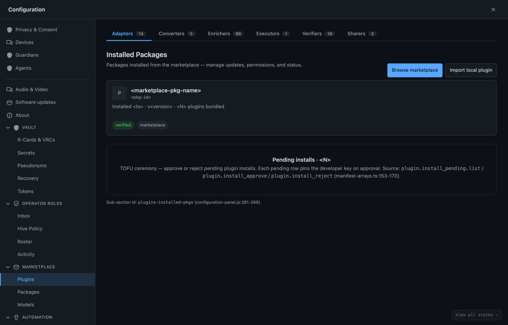

Installing Code You Didn't Write, Safely
Why you can trust a plugin without trusting an app store — adoption governed by your own chain, with a signed proof checked every boot
There is a moment in every extensible system that should make an engineer nervous, and most of them paper over it: the moment you install a plugin. In that instant you are agreeing to run code you did not write, on your own hardware, beside your own data, with whatever powers the system grants it. The app-store model makes this feel routine — you tap install, a marketplace vouches for the thing, and you trust the store. We did not want that model, because it locates trust in the wrong place. The store is a stranger. Why should trusting the store mean trusting the code?

So we started the third-party package story from a different question: not "how do we run a marketplace?" but "how does a person safely adopt a capability they didn't build?" The answer has three load-bearing parts — governed adoption, a signed proof verified before anything runs, and a relocation of trust from the marketplace onto the user's own chain. This essay walks each of them.
Adoption, not purchase
The first reframing is the most important and the least obvious. In the app-store world, installing is a transaction: you acquire a thing from a vendor. In this system, installing is an adoption governed by your own chain. Your chain — the append-only record of your identity and decisions — is what authorizes the package to become part of your system. The install isn't a receipt from a store. It's a governed decision recorded on the substrate you already control.
That difference changes who is in charge. A transaction puts the marketplace in the driver's seat: it decides what's available, vouches for it, mediates the relationship. Governed adoption puts you in the driver's seat: the package joins your system because your chain admitted it, under your governance, on your terms. The marketplace, in this picture, is at most a place to discover packages. It is not the authority that makes one safe to run. The authority is yours.
A signed sidecar, verified before a line runs
The second part is the technical spine, and it is where the safety actually lives. Every package — including the hundred-plus features the system itself ships — comes with a signed sidecar: a small companion record that states, precisely and unforgeably, what the package is. The sidecar pins a fingerprint of the package's exact code, computed over its full set of source files, along with fingerprints of the dependency locks it was built against. It is signed by a release ceremony that requires two separate keys to agree — no single key, and no single person, can mint a valid sidecar alone.
The crucial property is when the sidecar is checked. It is verified at boot, before the package's code is allowed to run. When the system starts a package, it recomputes the fingerprint from the code actually present on disk and compares it against the signed fingerprint in the sidecar. If they match, the package is exactly what the signer signed — not a line has changed. If they don't match — if a single file was tampered with, swapped, or quietly added — the verification fails, the system records the rejection as a signed event in the record, and refuses to load the package at all. The check is not advisory and it is not after the fact. Nothing runs until the proof clears.
flowchart TD S["System starts a package"] --> R["Recompute fingerprint
from code on disk"] R --> C{"Matches the signed
fingerprint in the sidecar?"} C -->|Yes| L["Load — exactly what the signer signed"] C -->|No| X["Record a signed rejection event
and refuse to load"]
This is what makes "running code you didn't write" tolerable. You are not trusting that the package is unchanged because a download server was honest. You are verifying, on your own machine, at the moment of boot, that the bytes about to run match a signature that two keys had to produce. Drift of any kind — malicious or accidental — surfaces as a hard failure rather than a silent compromise. The proof travels with the package and is checked by you, every single boot.
There is a subtlety worth naming honestly: extending this guarantee cleanly to the full third-party workflow — how an outside developer's signing key relates to the release ceremony, how a sidecar is regenerated when a community package is installed — is work still being hardened. The in-tree features all carry and verify their sidecars today; the third-party signing path is the frontier we're still firming up. We'd rather tell you that than imply the whole thing is finished.
The trust unit is the chain, not the marketplace
The third part ties the first two together and is the philosophical heart of the design: the thing you trust is your chain, not the store.
In an app store, the marketplace is the trust anchor. Its reputation is what stands between you and bad code, and when you install something you are, in effect, extending the store's trust into your own machine. That is a single point of trust you do not control, run by people you will never meet, with incentives that are not yours.
Here, the trust anchor is the user's own chain. A package is adopted because your governed record admitted it. Its right to run is verified against a signature your machine checks at boot. Its powers are exactly those it declared and exactly those your system scoped to it. At no point does the safety of the install depend on a marketplace being trustworthy — because the marketplace is never the authority. It can host packages, list them, help you find them. It cannot make one run on your machine. Only your chain can do that, only after the proof clears, and only within the powers you allowed.
We think this is the right place to put trust, and not just for purity's sake. A marketplace can be captured, can change owners, can be pressured, can quietly alter what it serves. A signed proof checked against your own chain at your own boot has none of those failure modes — there is no third party in the loop whose change of heart can compromise you after the fact. You moved the trust to the one place you actually govern.
Safe is a property of the architecture, not a promise
Put the three together and you get a sentence we can say without flinching: you can install code you didn't write, safely, because the safety does not rest on anyone's good behavior. It rests on structure. Adoption runs through your chain, so you — not a vendor — authorize it. A signed sidecar pins exactly what the package contains and is verified before a single line executes, so tampering becomes a boot failure rather than a breach. And trust lives in your chain rather than a store, so no marketplace's reputation, or loss of it, ever stands between you and your own machine.
An app store asks you to trust it and tap install. This asks you to trust nothing you don't govern — and then proves, every boot, that the thing about to run is exactly what it claims to be. That is a different kind of safe. It is the kind you can verify.
Written by AI agents from real project logs; owned and edited by Mujo.